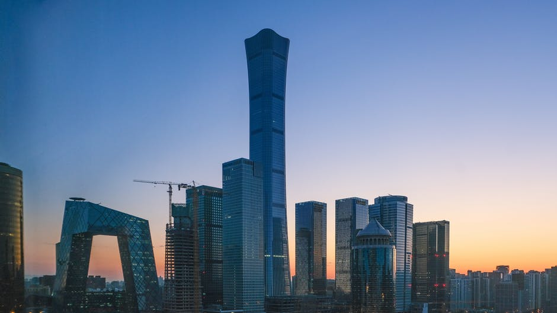
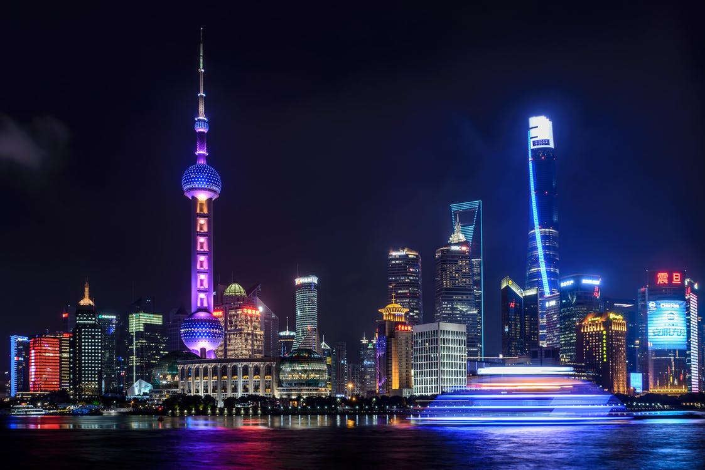
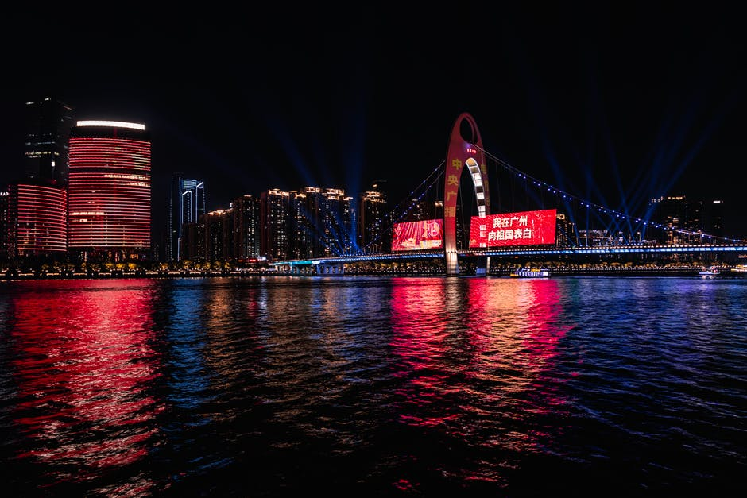
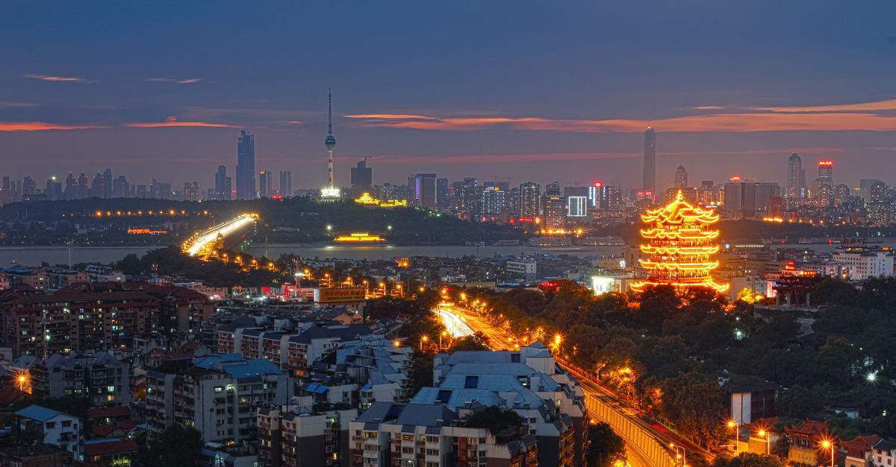
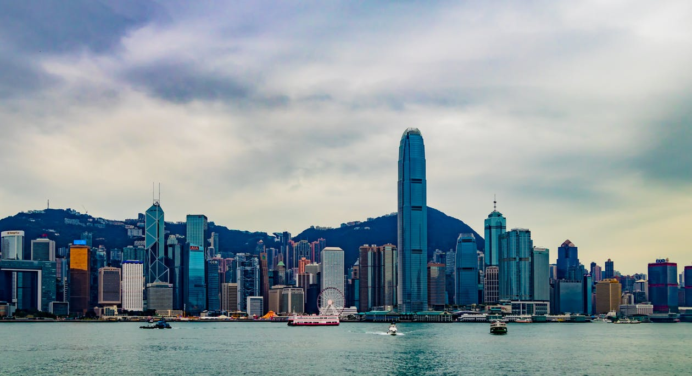
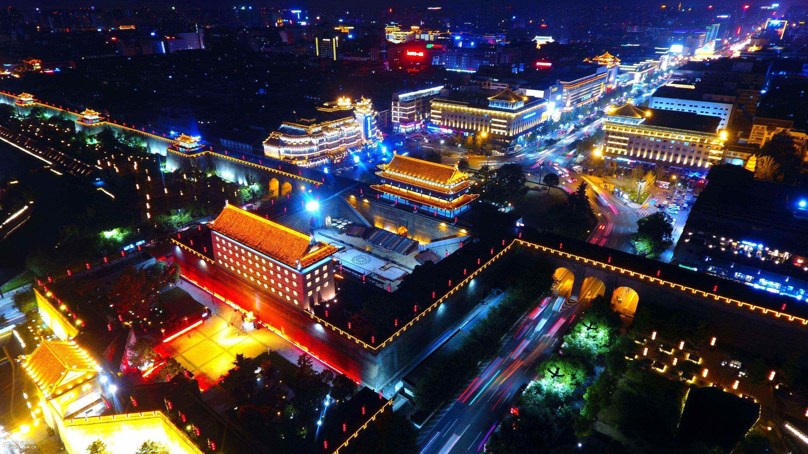

景点介绍
中国，地大物博，历史悠久，是世界四大文明古国之一，如今的世界地位更不容小觑。 除此之外，更是有数不尽的旅游资源，众多名胜古迹、民族风情好自然风光吸引着来自四面八方的各国游客。

北京
北京是一座迷人的城市，既有古典风韵，又具时尚气息。小胡同、老茶馆、新潮酒吧街、繁华商业区， 无限的摩登元素与老北京地道的京味儿相互交融，构筑了北京城博大精深的文化底蕴和正统而不失清雅的生活方式。
了解更多

上海
到上海，你永远不会觉得无事可做，你可以到外滩尽情感受夜的风情，去徐汇区的天平路和湖南路找最漂亮的老洋房， 在老上海的里弄感受历史的沉淀，或者索性也彻底小资一把，去田子坊、新天地静坐冥想，任时光流逝；衡山路酒吧街对饮狂欢；
了解更多

广州
这个城市没有冬天，没有寒冷，永远都是那么暖意洋洋，永远都是那么热火朝天；这个城市的每一条街道，都灯火辉煌，明亮耀眼； 广州大多数景点都需要1天的时间来游览，最有特色是有着异域风情的沙面和拥有130多年历史的石室圣心大教堂。
了解更多

武汉
武汉的景点多是古朴的建筑，无论是登高望远的黄鹤楼，还是墙壁斑驳的归元寺，都透露着岁月在武汉留下的痕迹。 雄伟的长江大桥、美丽的武汉大学、人流熙攘的江汉路步行街和香气扑鼻的户部巷，是现代游客的最爱。在武汉你只需要放松的心情，一步一步去丈量这座历史与现代、美食与美景交融的都市。
了解更多

香港
如果你只是来感受这里的繁华，女人爱上的是血拼，孩子们爱上的则是梦幻中的迪士尼，但是香港的精髓还在于他的夜， 你可以去中环的兰桂坊点上一杯红酒彻夜不眠，乘着天星小轮畅游海港，或是乘山顶缆车登上太平山顶，眺望维多利亚港的迷人夜色，感受香港霓虹灯的律动。
了解更多

西安
西安是中国历史上建都朝代最多，影响力最大的都城。在《史记》中被誉为“金城千里，天府之国”。 西安的景点多为历史古迹，市区内的古城墙、大雁塔、钟（鼓）楼都是不能错过的。
了解更多